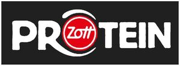

Trade Mark Journal No.2025/031 1 August 2025
WO0000001864585 (5,29,30,32)
Office of origin: European Union Intellectual Property Office (EUIPO)
Date of International Registration:10 December 2024
Date of designation in the UK:
10 December 2024

The mark contains the colours black, white and red.
International priority date claimed: 21 June 2024
(European Union Intellectual Property Office (EUIPO))
(019044597)
- Class 5
- Infant formula; baby food and baby milk including in powder form; all the aforesaid goods also in vegan form; nutritional supplements.
- Class 29
- Milk; rice milk; almond milk; soya milk; spelt milk; oat milk; nut milk; coconut milk; rice drinks [milk substitutes]; almond drinks [milk substitutes]; soya drinks [milk substitutes]; spelt beverages [milk substitutes]; oat drinks [milk substitutes]; nut beverages [milk substitutes]; coconut beverages [milk substitutes]; dairy products namely drinking milk, sour milk, acidophilus milk, buttermilk, yogurt, fruit yoghurt, drinking yoghurt, chocolate or cocoa yoghurt; non-alcoholic mixed milk drinks [milk predominating]; kephir; cream; quark; fruit and herb quark desserts; curd cheese; fruit and herb curd cheese; milk and dairy based food and/or beverages; fortified foods and/or beverages and ready meals/beverages based on milk, milk products and/or dairy substitutes; desserts consisting essentially of milk with added spices and with added gelatine and/or starch as binders; butter; clarified butter; cheese and cheese preparations; milk and whey powder being foodstuffs for humans with and without added ingredients; fat-containing mixtures for bread slices; vegetable pate; spreads consisting mainly of eggs; spreads consisting mainly of fruits; fat-based spreads for bread slices; nut-based spreads; spreads prepared wholly or principally from foodstuffs made from or with a base of cheese or dairy spreads flavoured with cheese or cheese derivatives; dietetic yoghurt for non-medical purposes; dairy desserts and desserts based on vegan milk substitutes containing fruit flavourings; dessert creams; panna cotta; jellies; milk shakes; whey; all the aforesaid milk products also based on rice milk, almond milk, soya milk, spelt milk, oat milk, nut milk, coconut milk or other plant-based ingredients including all the aforesaid goods in vegan form; dairy products or dairy substitutes [preparations in which protein milk or milk fat is wholly or partially substituted by milk substitutes]; processed fruits and vegetables; soups and broths; finished goods based on vegetables and fruit; all of the aforesaid goods also in vegan form; yoghurt substitute; fruit yoghurt substitute; yoghurt substitute with added chocolate or cocoa; drinking yoghurt substitutes; plant-based substitutes for milk products; preparations based on plants being substitutes for milk products; milk substitutes based on plants in liquid, cream, solid, mousse or jelly form; the aforesaid goods included in this class; fruit desserts; jelly based desserts; cold milk dishes; cold fruit dishes; vegetable soups; potato crisps and snacks derived from cheese or potato products; edible fats; dairy-based dips; cheese dips; vegetable-based dips; fruit-based dips; liquid ready-to-serve meals, mainly consisting of milk products and /or dairy substitutes; liquid ready-to-serve meals, mainly consisting of fruit and/or vegetables.
- Class 30
- Coffee; frozen coffee; beverages based on coffee; desserts based on coffee; substitutes of coffee; iced coffee; flavoured coffee; coffee oils; ice beverages with a coffee base; coffee in whole-bean form; coffee bags; coffee extracts; mixtures of coffee; coffee concentrates; instant coffee; decaffeinated coffee; chocolate coffee; coffee essences; prepared coffee and coffee-based beverages; roasted coffee beans; coffee capsules, filled; vegetal preparations for use as coffee substitutes; chocolate; beverages based on chocolate; tea; beverages based on tea; ice tea; cocoa; beverages based on cocoa; puddings; edible ice; powder for ice cream; confectionery; long-life cakes and pastries, in particular prepared cakes and waffles; sweets; rice pudding; fruit-flavoured desserts; mousse confections; preparations predominantly consisting of oat flakes, rice, semolina; semolina desserts; cocoa-based beverages; products made from chocolate; all the aforesaid goods also in vegan form; all the aforesaid goods included in this class, where applicable, with added rice milk, almond milk, soya milk, spelt milk, oat milk, nut milk, coconut milk, rice beverages, almond beverages, soya beverages, spelt beverages, oat beverages, nut beverages, coconut beverages or other plant-based ingredients, and including all the aforesaid goods in vegan form; all the aforesaid goods included in this class, where applicable, with added dairy substitutes in which protein milk or milk fat is wholly or partially substituted by milk substitutes; all the aforesaid goods included in this class, where applicable, with added dairy products in which protein milk or milk fat is wholly or partially substituted by milk and milk fat substitutes milk]; flour-based snacks; cereal-based snacks; flour or cereal-based savoury snack foods; sandwiches; bakery goods; pasta; crackers and pretzels made from varieties of cereal; flour or cereal-based filled snacks, not included in other classes; filled bakery goods, as far as these goods are not included in other classes; sauces for rice; chocolate dips for snacks; herbs and spice dips; flour, cereal or grain-based snack foods; prepared meals consisting primarily of pasta or rice; semi-prepared meals consisting primarily of flour, rice or cereals; fortified food and meal substitutes based on flour, rice and cereals in liquid, semi-solid or powder form; dessert souffles; all the aforesaid goods also with added rice milk, almond milk, soya milk, spelt milk, oat milk, nut milk, coconut milk, rice beverages, almond beverages, soya beverages, spelt beverages, oat beverages, nut beverages, coconut beverages or other plant-based basic ingredients, and including all the aforesaid goods in vegan form; all the aforesaid goods with added dairy substitutes [preparations in which milk protein or milk fat is wholly or partially substituted by milk substitutes]; snack foods made from maize; red fruit jelly; foods and/or beverages, fortified foods and/or beverages and ready meals/beverages based on one or more of the following products: coffee, tea, cocoa and coffee substitutes, rice, tapioca and sago, flours and cereal preparations, pastry and confectionery, ice cream, sugar, honey, treacle, yeast, baking powder, spices, chilled ice cream; cookies; protein-enriched energy bars; sweet protein-enriched energy bars; protein-enriched cereal and flour-based snacks; sweet protein-enriched cereal and flour-based snacks; liquid ready-to-serve meals, mainly consisting of rice, cereals or pasta; drinking chocolate; dairy puddings.
- Class 32
- Soft drinks; protein drinks; non-alcoholic beverages; whey beverages; protein-enriched sports drinks; protein drinks [non-alcoholic protein-based drinks]; concentrates and/or powders for making beverages; concentrates and/or powders for making fortified beverages; fortified drinks; drinks with vitamins; sports drinks; energy drinks.
Zott SE & Co. KG
Representative: SQUIRE PATTON BOGGS (US) LLP, Neue Mainzer Strasse 66-68, 60311 Frankfurt am Main, GERMANY